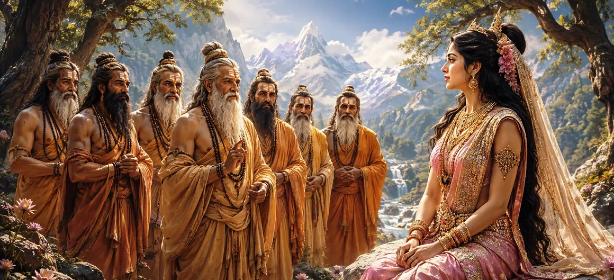

यह अध्याय बताता है कि कैसे सात महान ऋषियों, जिन्हें सप्तऋषि के नाम से जाना जाता है, को भगवान शिव के प्रति पार्वती की भक्ति की गहराई की जांच करने के लिए भेजा गया था। हालाँकि शिव ने पहले ही उसके हृदय की पवित्रता को पहचान लिया था, ऋषियों को उसके अटूट विश्वास को देखने का अवसर दिया गया। प्रश्नों, तर्कों और उसके मन को बदलने के प्रयासों के माध्यम से, उन्होंने परीक्षण किया कि क्या उसका दृढ़ संकल्प अस्थायी भावना या वास्तविक आध्यात्मिक अनुभूति से उत्पन्न हुआ था।
एक दिन, जब पार्वती ने हिमालय में अपनी तपस्या जारी रखी, सात महान ऋषि उनके आश्रम में पहुंचे। उनकी बुद्धि को पूरे ब्रह्मांड में सम्मान दिया गया, और उनकी उपस्थिति ने तुरंत पवित्र स्थान को आध्यात्मिक गरिमा से भर दिया। पार्वती ने विनम्रता से उनका स्वागत किया और उन्हें उचित सम्मान दिया।
ऋषियों ने पार्वती से उनकी कठोर तपस्या का उद्देश्य पूछा। जब उन्होंने घोषणा की कि वह भगवान शिव को अपने पति के रूप में चाहती हैं, तो उन्होंने ध्यान से सुना और उनके दृढ़ विश्वास की दृढ़ता की जांच करना शुरू कर दिया।
उसके दृढ़ संकल्प का परीक्षण करने के लिए, ऋषियों ने अन्य दिव्य प्राणियों के बारे में बात की जिनके पास धन, शाही वैभव और स्वर्गीय महिमा थी। उन्होंने सुझाव दिया कि ऐसे देवता एक कुलीन राजकुमारी के लिए अधिक उपयुक्त साथी हो सकते हैं।
पार्वती ने आदरपूर्वक उत्तर दिया कि भगवान शिव सभी सांसारिक तुलनाओं से परे हैं। जबकि दूसरों के पास बाहरी धन हो सकता है, शिव सभी सृजन, संरक्षण और विघटन का स्रोत थे। उनके लिए, ब्रह्मांड में कोई भी खजाना महादेव की भक्ति के बराबर नहीं हो सकता।
ऋषियों ने लगातार प्रेरक तर्कों के साथ उसके संकल्प को चुनौती देना जारी रखा। फिर भी प्रत्येक प्रश्न ने पार्वती के दृढ़ संकल्प को मजबूत किया। उनके उत्तरों में गहन ज्ञान, आध्यात्मिक अंतर्दृष्टि और उनके चुने हुए मार्ग के संबंध में पूर्ण निश्चितता झलकती थी।
अंततः सप्तऋषियों को एहसास हुआ कि पार्वती की भक्ति को डिगाया नहीं जा सकता। उन्होंने देखा कि शिव के प्रति उनका प्रेम व्यक्तिगत इच्छा के बजाय सत्य, ज्ञान और आध्यात्मिक अनुभूति पर आधारित था। उसके प्रति उनकी प्रशंसा अत्यधिक बढ़ गई।
उनके उत्तरों से संतुष्ट होकर ऋषियों ने पार्वती को आशीर्वाद दिया। उन्होंने उसे आश्वासन दिया कि उसकी भक्ति सफल होगी और उसका भाग्य लगातार पूर्णता की ओर बढ़ रहा है। उनके आशीर्वाद से उसका आत्मविश्वास मजबूत हुआ और उसके दिल में खुशी आई।
चुनौतियों और आलोचनाओं के बावजूद सच्चा विश्वास दृढ़ रहता है।
सच्ची भक्ति गहरी समझ द्वारा समर्थित है।
सच्ची भक्ति संतों और देवताओं का समान सम्मान अर्जित करती है।
पार्वती की प्रतिक्रियाओं से पता चला कि उनकी भक्ति केवल भावना पर आधारित नहीं थी। यह ज्ञान, चिंतन और आध्यात्मिक अनुभव द्वारा समर्थित था। आस्था और ज्ञान के इस संयोजन ने उनके संकल्प को अटूट बना दिया।
सात ऋषियों ने पार्वती की परीक्षा उन्हें हतोत्साहित करने के लिए नहीं बल्कि उनकी भक्ति की महानता को प्रकट करने के लिए की थी। चुनौतियाँ अक्सर ईश्वर के प्रति किसी के विश्वास और प्रतिबद्धता की गहराई को प्रदर्शित करने का अवसर प्रदान करती हैं।
जब ऋषियों को पार्वती की ईमानदारी पर यकीन हो गया, तो दिव्य लोक प्रसन्न हुए। देवताओं ने समझ लिया कि शिव और पार्वती के मिलन की दिशा में एक और महत्वपूर्ण कदम पूरा हो चुका है।
ऋषियों के परीक्षण के सफल समापन ने दिव्य कथा के अगले चरण के लिए मार्ग तैयार किया। प्रत्येक परीक्षण ने पार्वती की योग्यता की पुष्टि की थी, जिससे वह अपने पवित्र भाग्य की पूर्ति के और भी करीब आ गई थीं।
"बुद्धि में निहित विश्वास हर परीक्षा के साथ मजबूत होता जाता है।"
सात महान ऋषियों के प्रश्नों का सफलतापूर्वक उत्तर देने के बाद, पार्वती की भगवान शिव के प्रति अटूट भक्ति सभी के लिए स्पष्ट हो गई। संत उसे आशीर्वाद देते हैं और उसके आध्यात्मिक संकल्प की शुद्धता को स्वीकार करते हैं। उसकी राह में एक और महत्वपूर्ण मुठभेड़ इंतज़ार कर रही है। पार्वती और जतिला के बीच दिलचस्प संवाद की खोज के लिए अगले अध्याय को जारी रखें, एक बातचीत जो उनके विश्वास, ज्ञान और दृढ़ संकल्प की गहराई को प्रकट करती है।